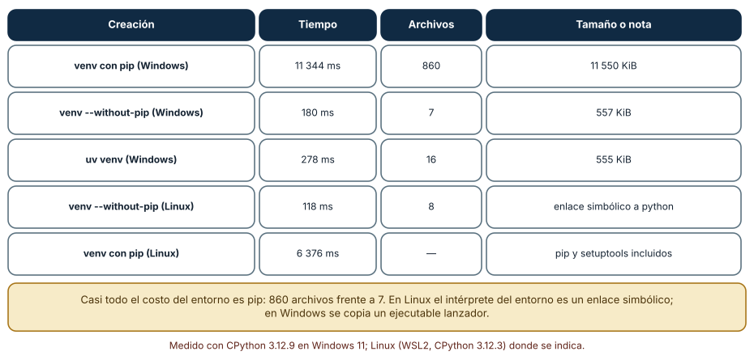
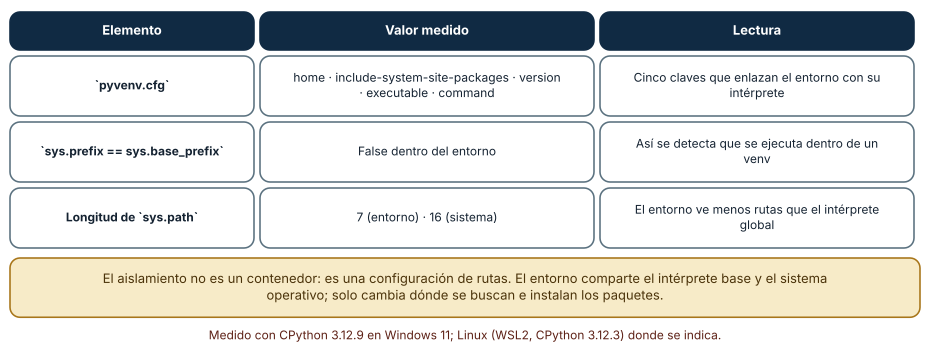
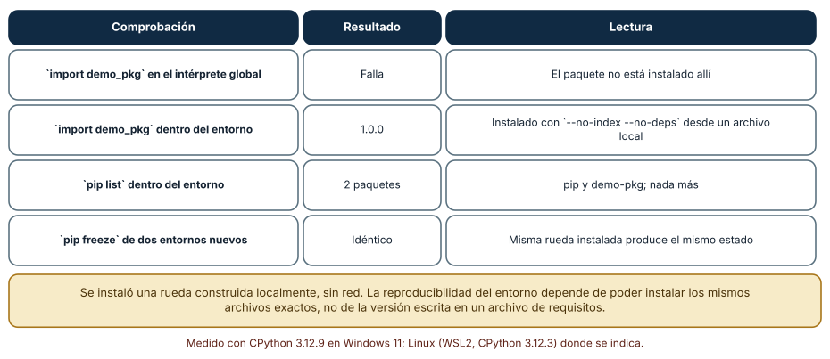

← SE-102 — Gestores de versiones de runtimes · ↑ Parte 08 · 📚 Índice completo · 🌐 Portal · SE-104 — Dev Containers y entornos desechables →
Punto profesional y fundamento pedagógico
Punto profesional. La clase existe para aislar dependencias y explicar qué comparte un entorno virtual con el sistema.
Por qué aparece aquí. Se sitúa después de Gestores de versiones de runtimes y antes de Dev Containers y entornos desechables: convierte el conocimiento anterior en una decisión observable que la clase siguiente podrá reutilizar. La continuidad se comprueba en el artefacto, no por compartir vocabulario.
Error conceptual que debe corregir. Tratar venv como contenedor o lockfile.
Secuencia de aprendizaje. Antes de leer la solución, el estudiante predice el resultado del caso normal y del error conceptual anterior. Luego explica un caso resuelto paso a paso, construye un contraejemplo que cambie la decisión y, sin consultar el texto, reconstruye el mecanismo y lo aplica a una entrada nueva. La secuencia usa predicción, explicación propia, contraste y recuperación. ICAP distingue participación de construcción de conocimiento; How People Learn II exige conectar conocimiento previo, contexto y transferencia; la práctica de recuperación respalda producir de nuevo la explicación tras una demora; y Education for Life and Work exige devolución que explique la causa del error.
Evidencia de aprendizaje. Environment-audit.md con intérprete, rutas, paquetes, recreación y contaminación inducida. Debe contener predicción previa, observación, explicación causal, contraejemplo, criterio de aceptación y una nota de qué dato haría cambiar la conclusión.
Límite de la conclusión. El entorno virtual no aísla kernel, red ni bibliotecas del sistema.
Trazabilidad fuente → afirmación
| Fuente primaria u oficial | Afirmación que respalda | Lo que no prueba |
|---|---|---|
| Python venv | Aislamiento de intérprete, scripts y entorno virtual; autoridad: Python Software Foundation | No demuestra por sí sola que el artefacto del estudiante sea correcto. |
| Development Container Specification | Configuración reproducible de herramientas y ciclo de vida del contenedor; autoridad: Dev Container Specification maintainers | No demuestra por sí sola que el artefacto del estudiante sea correcto. |
Antes de empezar
Esta clase continúa el entorno reproducible de diagnóstico de la Parte 08. Recupera la evidencia de la clase anterior, añade una decisión propia de Entornos virtuales y aislamiento de dependencias y deja un artefacto que la clase siguiente deberá consumir. La pregunta activa es: ¿Qué aísla realmente un entorno virtual y qué sigue compartiendo con el sistema?
Prerrequisitos
- Haber completado la clase anterior o reconstruir su contrato y evidencia.
- Python 3.11 o posterior, terminal, editor y Git; un segundo runtime es opcional y debe declararse.
- Trabajar con fixtures sintéticos: ninguna observación necesita datos de una persona o sistema real.
Problema auténtico
La prueba de la biblioteca de estructuras y algoritmos pasa porque un paquete quedó instalado globalmente. En checkout limpio falta; activar un venv existente tampoco ayuda porque apunta a otra ruta de Python.
Objetivos observables
Al terminar podrás explicar los cinco mecanismos de esta clase, predecir su comportamiento antes de ejecutar, construir un caso normal y uno límite, diagnosticar el fallo controlado, comparar una alternativa y entregar evidencia que otra persona pueda reproducir.
Mapa conceptual
Ver la notación fuente del diagrama
flowchart LR
N1[Entorno virtual] --> N2[Activación / ejecutable explícito] --> N3[Dependencias de proyecto / herramientas] --> N4[Recreación / comprobación] --> N5[Secretos / configuración]
N5 -->|fallo o cambio| N1El mapa se lee como una cadena de razonamiento, no como fases obligatorias del runtime. La flecha de retorno indica que un fallo o cambio de requisito obliga a revisar el modelo inicial; no autoriza a parchear solo la última salida.
Temas y por qué importan
| Tema | Por qué cambia una decisión profesional | Evidencia mínima |
|---|---|---|
| Entorno virtual | venv crea un prefijo con scripts y configuración que usa una instalación base. | Predicción, traza causal y contraejemplo de Entorno virtual en environment-audit.md |
| Activación y ejecutable explícito | Activar antepone scripts al PATH para conveniencia. | Predicción, traza causal y contraejemplo de Activación y ejecutable explícito en environment-audit.md |
| Dependencias de proyecto y herramientas | Runtime, dependencias de ejecución, desarrollo y herramientas globales tienen ciclos distintos. | Predicción, traza causal y contraejemplo de Dependencias de proyecto y herramientas en environment-audit.md |
| Recreación y comprobación | El test real borra o ignora el entorno, crea uno nuevo, instala desde fuentes declaradas y ejecuta. | Predicción, traza causal y contraejemplo de Recreación y comprobación en environment-audit.md |
| Secretos y configuración | Variables y archivos locales pueden entrar al proceso pese al aislamiento de paquetes. | Predicción, traza causal y contraejemplo de Secretos y configuración en environment-audit.md |
Conceptos y decisiones
1. Entorno virtual
venv crea un prefijo con scripts y configuración que usa una instalación base. Aísla paquetes por defecto, no kernel, variables, herramientas del sistema ni red. El entorno se recrea; no se copia entre rutas como artefacto portable.
2. Activación y ejecutable explícito
Activar antepone scripts al PATH para conveniencia. No es requisito: llamar .venv/bin/python o equivalente selecciona explícitamente. Los scripts tienen rutas de plataforma; por eso documentación incluye comandos Windows y POSIX cuando aplica.
3. Dependencias de proyecto y herramientas
Runtime, dependencias de ejecución, desarrollo y herramientas globales tienen ciclos distintos. Mezclarlas amplía superficie. El manifest declara intención y el lock o resolución registra selección; un freeze indiscriminado puede incluir paquetes ajenos.
4. Recreación y comprobación
El test real borra o ignora el entorno, crea uno nuevo, instala desde fuentes declaradas y ejecuta. Caches aceleran sin ser fuente de verdad. La guía incluye limpieza recuperable y no elimina rutas fuera del workspace.
5. Secretos y configuración
Variables y archivos locales pueden entrar al proceso pese al aislamiento de paquetes. .env no debe versionar secretos; se usan ejemplos sin credenciales y validación de variables requeridas. Logs no imprimen tokens durante diagnóstico.
Cuánto cuesta un entorno virtual y por qué
Crear un entorno con python -m venv tomó 11 344 ms en Windows y dejó 860 archivos y 11 550 KiB. Con --without-pip tomó 180 ms, 7 archivos y 557 KiB. Con uv venv, 278 ms, 16 archivos y 555 KiB. En Linux (WSL2), venv --without-pip tomó 118 ms con 8 archivos y con pip 6 376 ms. Casi todo el costo es instalar pip: 860 archivos frente a 7. En Linux, además, el intérprete del entorno es un enlace simbólico al base; en Windows se copia un lanzador. Un entorno es barato; lo caro es lo que se instala dentro.

Cómo leer la figura. Cada fila es una forma de crear el entorno con su tiempo y tamaño. Dónde deja de valer: el tiempo de 11 s incluye la instalación de pip desde la copia empaquetada con Python y el antivirus del equipo; en otra máquina cambia. Que uv sea 40 veces más rápido en este caso no significa que lo sea con un conjunto grande de dependencias.
Cómo se aísla realmente
Un entorno virtual no es un contenedor: es un archivo pyvenv.cfg y una forma de calcular rutas. El archivo del entorno medido tiene cinco claves (home, include-system-site-packages, version, executable, command). Dentro del entorno, sys.prefix difiere de sys.base_prefix (así se detecta que se ejecuta dentro de un entorno) y sys.path tiene 7 entradas frente a 16 del intérprete del sistema. El entorno comparte el intérprete base y el sistema operativo; solo cambia dónde se buscan e instalan los paquetes. Por eso un entorno no protege de variables de entorno, de bibliotecas del sistema ni de la versión del sistema.

Cómo leer la figura. Cada fila es un hecho comprobable dentro y fuera del entorno. Dónde deja de valer: con include-system-site-packages = true el entorno ve también los paquetes del sistema, y el aislamiento desaparece.
Instalar sin tocar el sistema
Se construyó una rueda local de un paquete diminuto (demo-pkg) y se instaló con --no-index --no-deps en dos entornos nuevos. import demo_pkg falló en el intérprete global y devolvió 1.0.0 dentro del entorno; pip list mostró solo dos paquetes (pip y demo-pkg) y pip freeze fue idéntico en los dos entornos. Esa es la comprobación de aislamiento: lo instalado en un entorno no aparece fuera, y el mismo archivo instalado dos veces produce el mismo estado. La instalación sin red es también una propiedad útil: demuestra que no se depende de un índice externo para reconstruir el entorno.

Cómo leer la figura. Las filas comparan dentro y fuera, y entre dos entornos. Dónde deja de valer: con dependencias transitivas la instalación sin red exige tener todos los archivos; aquí se usó --no-deps porque el paquete no tiene ninguna.
Definiciones de trabajo
- entorno virtual:
venvcrea un prefijo con scripts y configuración que usa una instalación base. - activación y ejecutable explícito: activar antepone scripts al path para conveniencia.
- dependencias de proyecto y herramientas: runtime, dependencias de ejecución, desarrollo y herramientas globales tienen ciclos distintos.
- recreación y comprobación: el test real borra o ignora el entorno, crea uno nuevo, instala desde fuentes declaradas y ejecuta.
- secretos y configuración: variables y archivos locales pueden entrar al proceso pese al aislamiento de paquetes.
Las definiciones son operativas para el entorno reproducible de diagnóstico. No convierten términos con historia más amplia en sinónimos y deben contrastarse con la documentación primaria enlazada al final.
Ejemplo mínimo
python -m venv .venv
.venv\Scripts\python -m pip --version # Windows
# .venv/bin/python -m pip --version # POSIX
.venv\Scripts\python -m unittest -vAntes de ejecutar, predice estado, resultado y error. Después registra versión, comando y salida. Si el fragmento es pseudocódigo o pertenece a otro lenguaje, etiquétalo como tal y no afirmes que fue ejecutado.
Ejemplo profesional
En el entorno reproducible de diagnóstico, una investigación conserva síntoma, entorno, reproducción, hipótesis, observaciones, causa, corrección y regresión. La implementación de esta clase debe conservar ese contrato aunque cambie la forma interna. El caso profesional no pregunta únicamente si produce una salida: pregunta quién puede producirla, qué estado observa, cómo falla y qué rastro permite disputar una decisión incorrecta.
Compara el caso normal con autorización falsa, evidencia incompleta, empate y repetición. Un mecanismo es apropiado cuando esas diferencias quedan visibles y localizadas; es peligroso cuando dependen de orden accidental, estado oculto o una convención que el consumidor no puede conocer.
Práctica guiada
- Copia el contrato de entrada y salida antes de escribir implementación.
- Predice el caso normal y un límite; identifica la invariante que no puede romperse.
- Implementa la versión mínima sin I/O dentro del núcleo.
- Ejecuta el caso y conserva comando, versión y salida bajo
evidence/. - Introduce el fallo controlado, reduce la reproducción y formula dos hipótesis rivales.
- Corrige la causa, añade regresión y ejecuta el conjunto completo.
- Compara con otro paradigma o lenguaje indicando qué semántica se preserva.
Ejercicios
- Costo: crea un entorno con y sin pip, y calcula la razón de tiempos y de archivos.
- Detección: escribe una línea que determine si el proceso corre dentro de un entorno virtual.
- Aislamiento: instala un paquete local en un entorno y demuestra que no se puede importar fuera.
- Receta: escribe el comando único que recrea tu entorno desde cero y la prueba que lo verifica.
Reto verificable
Entrega implementación, fixtures, pruebas y un informe corto. Se aprueba si otra persona ejecuta desde checkout limpio, obtiene los mismos resultados y puede relacionar cada rama o transformación con una regla del dominio. No se aprueba por cantidad de archivos ni por usar la sintaxis característica del paradigma.
Caso conductor
El entorno reproducible de diagnóstico parte de una inversión de empates en la biblioteca de estructuras y algoritmos, captura versión y entrada mínima, compara un entorno sano con uno afectado y conserva la primera divergencia observable. Cambia después una sola regla o condición y revisa qué archivos, pruebas y trazas debieron modificarse. Esa superficie de cambio alimenta el proyecto final de la parte.
Preguntas frecuentes
¿Por qué un entorno por proyecto?
Porque proyectos distintos necesitan versiones distintas de las mismas bibliotecas, y mezclarlos en el intérprete global hace que instalar una dependencia rompa otro proyecto.
¿Se versiona la carpeta del entorno?
No. Se versiona la definición (archivo de requisitos con versiones y hashes, o un archivo de bloqueo) y el entorno se recrea desde ella. La carpeta contiene rutas absolutas que no se trasladan entre máquinas.
¿Puedo mover un entorno a otra ruta?
No de forma fiable: contiene rutas absolutas al intérprete. Se recrea en la nueva ubicación.
¿Qué diferencia hay entre pip freeze y un archivo de bloqueo?
pip freeze lista lo instalado, sin hashes ni marcadores de plataforma; un archivo de bloqueo describe cómo reconstruirlo con hashes. El primero es un informe; el segundo, una receta.
Fallo controlado y diagnóstico
Importa un paquete presente solo globalmente. Ejecuta con -I cuando corresponda, crea venv limpio y declara la dependencia o elimínala.
Registra síntoma, entrada mínima, hipótesis, observación que descarta cada hipótesis, causa, corrección y prueba de regresión. No cambies simultáneamente implementación, fixture y expectativa.
Reproduce la contaminación. Instala un paquete en el intérprete global (en una máquina de prueba) y comprueba que un proyecto lo importa sin declararlo. Síntoma: funciona en tu máquina y falla en otra limpia. Hipótesis: hay una dependencia no declarada que el entorno global satisface. Prueba: crea un entorno vacío, ejecuta el proyecto y observa el ModuleNotFoundError. Conclusión: declarar las dependencias exige ejecutar en un entorno vacío. Guarda el error, la dependencia faltante y la corrección en checks.md, y añade la prueba «importar desde un entorno nuevo» a la CI.
Errores comunes y cómo corregirlos
| Síntoma | Causa | Corrección |
|---|---|---|
| Funciona aquí y no en otra máquina | Dependencia no declarada presente en el sistema | Probar siempre en un entorno vacío |
| El entorno deja de funcionar al moverlo | Rutas absolutas | Recrearlo desde su definición |
| Crear el entorno tarda mucho | Instalación de pip y antivirus | Usar --without-pip con uv o un caché de ruedas |
| Se versiona la carpeta del entorno | Se confunde entorno con definición | Versionar la receta, ignorar la carpeta |
pip freeze se toma como bloqueo | No contiene hashes ni plataforma | Usar un archivo de bloqueo con hashes |
Entorno y archivos clave
work/SE-103/
├── README.md
├── diagnostic_environment/
│ ├── domain.py
│ └── se_103.py
├── fixtures/cases.json
├── tests/test_se_103.py
└── evidence/diagnosis.mdEl README declara plataforma, runtimes, comandos, limpieza y límites. Evita dependencias externas cuando la biblioteca estándar permita observar el mecanismo; si agregas una, fija procedencia y versión.
Seguridad, ética y accesibilidad
- la autorización forma parte del dominio y no se infiere por ausencia de rechazo;
- no uses
eval, reglas descargadas ni serialización insegura; - limita colas, recursión, tamaño de entrada y tiempo de evaluación;
- redacta trazas y conserva una explicación textual además de color o animación;
- una recomendación automatizada debe poder revisarse, impugnarse y corregirse;
- respeta licencias de ejemplos y atribuye adaptaciones.
Puente hacia el trabajo con agentes
Un agente instala paquetes cuando le parece necesario. Si lo hace en el intérprete global, contamina el sistema y el resultado deja de ser reproducible. El harness debe darle un entorno desechable y una política explícita sobre qué puede instalar, registrar cada instalación y fallar si el agente intenta modificar el sistema. La prueba «ejecutar desde un entorno vacío» es la verificación más sencilla de que el agente declaró lo que usa.
Transferencia
Traslada un fixture al segundo modelo, herramienta, plataforma o lenguaje. Compara representación de ausencia, error, mutabilidad, orden y cancelación. La transferencia está lograda cuando el contrato se conserva y las diferencias están explicadas, no cuando la interfaz se parece.
Evaluación y evidencia
| Criterio | Evidencia para aprobar |
|---|---|
| comprensión | explicación causal de los cinco mecanismos |
| corrección | normal, límite, inválido y contraejemplo |
| diseño | estado, efectos y contrato localizables |
| diagnóstico | reproducción mínima y regresión |
| transferencia | comparación semántica, no estética |
| reproducibilidad | versiones, comandos, salida y límites |
Fuentes
- Language Server Protocol 3.18 — Mensajes, capacidades y sincronización entre editor y servidor; autoridad: Microsoft.
- Debug Adapter Protocol — Breakpoints, frames, variables y negociación de capacidades; autoridad: Microsoft.
- Python Debugging and Profiling — Pdb, cprofile, timeit, tracemalloc y límites instrumentales; autoridad: Python Software Foundation.
- Python venv — Aislamiento de intérprete, scripts y entorno virtual; autoridad: Python Software Foundation.
- Development Container Specification — Configuración reproducible de herramientas y ciclo de vida del contenedor; autoridad: Dev Container Specification maintainers.
- Web Content Accessibility Guidelines 2.2 — Percepción, operación por teclado y reducción de barreras en interfaces; autoridad: W3C.
Cada fuente respalda el mecanismo indicado; ninguna demuestra que la implementación del entorno reproducible de diagnóstico sea correcta. Esa afirmación depende de fixtures, pruebas, trazas y revisión reproducible.
- Python: módulo
venv: creación de entornos y estructura depyvenv.cfg. - PEP 405: entornos virtuales de Python: diseño del aislamiento por rutas.
- uv: entornos virtuales: creación y uso de entornos con
uv.
Límites y siguiente paso
El venv comparte sistema operativo y toolchain nativa. La siguiente clase encapsula un entorno de desarrollo desechable sin afirmar reproducibilidad absoluta.
Glosario
- entorno virtual:
venvcrea un prefijo con scripts y configuración que usa una instalación base. - activación y ejecutable explícito: activar antepone scripts al path para conveniencia.
- dependencias de proyecto y herramientas: runtime, dependencias de ejecución, desarrollo y herramientas globales tienen ciclos distintos.
- recreación y comprobación: el test real borra o ignora el entorno, crea uno nuevo, instala desde fuentes declaradas y ejecuta.
- secretos y configuración: variables y archivos locales pueden entrar al proceso pese al aislamiento de paquetes.
← SE-102 — Gestores de versiones de runtimes · ↑ Parte 08 · 📚 Índice completo · 🌐 Portal · SE-104 — Dev Containers y entornos desechables →